5.2a K-Means Clustering — Per Polutan#
Notebook ini menjalankan K-Means Clustering untuk masing-masing polutan (CO, NO₂, SO₂) pada dua skenario:
Skenario |
Input |
Keterangan |
|---|---|---|
Skenario 1 |
68 fitur asli |
Tanpa reduksi dimensi |
Skenario 2 |
37 fitur PCA |
Dengan reduksi dimensi |
Untuk masing-masing skenario, dicari jumlah cluster optimal (K) menggunakan Elbow Method dan Silhouette Score.
Dataset: Dataset gabungan kelas (35 mahasiswa × 68 fitur per polutan)
import pandas as pd
import numpy as np
import matplotlib.pyplot as plt
import matplotlib as mpl
from sklearn.cluster import KMeans
from sklearn.metrics import silhouette_score, silhouette_samples, davies_bouldin_score, calinski_harabasz_score
from sklearn.preprocessing import StandardScaler
from sklearn.decomposition import PCA
from sklearn.impute import SimpleImputer
import warnings
warnings.filterwarnings('ignore')
plt.rcParams['figure.dpi'] = 100
plt.rcParams['font.size'] = 10
POLLUTANTS = ['CO', 'NO2', 'SO2']
DATA_DIR = '../data/downloads/ekstraksi fitur'
META_COLS = ['id', 'nama', 'daerah']
K_range = range(2, 11)
5.2.1 Memuat Data#
Load dataset gabungan kelas untuk setiap polutan, lalu ekstraksi 68 fitur asli.
X_dict = {}
X_scaled_dict = {}
scaler_dict = {}
for p in POLLUTANTS:
path = f'{DATA_DIR}/ekstraksi_fitur_{p.lower()}.csv'
df = pd.read_csv(path)
X = df.drop(columns=META_COLS).values
# Handle NaN values with median imputation
nan_count = np.isnan(X).sum()
if nan_count > 0:
print(f'{p}: Ditemukan {nan_count} nilai NaN, melakukan imputasi median...')
imputer = SimpleImputer(strategy='median')
X = imputer.fit_transform(X)
scaler = StandardScaler()
X_scaled = scaler.fit_transform(X)
X_dict[p] = X
X_scaled_dict[p] = X_scaled
scaler_dict[p] = scaler
print(f'{p}: {X_scaled.shape[0]} data x {X_scaled.shape[1]} fitur')
CO: 37 data x 68 fitur
NO2: 37 data x 68 fitur
SO2: 37 data x 68 fitur
# Load hasil PCA dari notebook 5.1
X_pca_dict = {}
n_samples = X_scaled_dict[POLLUTANTS[0]].shape[0]
target_n_components = min(37, n_samples) # Tidak bisa melebihi jumlah sampel
for p in POLLUTANTS:
loaded = False
# Coba load dengan berbagai kemungkinan nama file
for n_comp in [37, target_n_components, 35]:
try:
df_pca = pd.read_csv(f'{DATA_DIR}/pca_results/jabon_pca_{n_comp}fitur_{p.lower()}.csv')
X_pca = df_pca.drop(columns=META_COLS).values
X_pca_dict[p] = X_pca
print(f'{p} PCA: {X_pca.shape[0]} data x {X_pca.shape[1]} fitur')
loaded = True
break
except FileNotFoundError:
continue
if not loaded:
print(f'{p}: File PCA tidak ditemukan, melakukan PCA ulang...')
pca = PCA(n_components=target_n_components)
X_pca = pca.fit_transform(X_scaled_dict[p])
X_pca_dict[p] = X_pca
print(f'{p} PCA (ulang): {X_pca.shape[0]} data x {X_pca.shape[1]} fitur')
CO PCA: 37 data x 37 fitur
NO2 PCA: 37 data x 37 fitur
SO2 PCA: 37 data x 37 fitur
5.2.2 Menentukan K Optimal#
Elbow Method#
Mencari elbow pada kurva inertia (Within-Cluster Sum of Squares). Titik di mana penurunan inertia mulai melambat menandakan K optimal.
Silhouette Score#
Mengukur seberapa mirip sebuah titik dengan cluster-nya sendiri dibandingkan cluster lain. Skor mendekati 1 = cluster yang baik.
def find_optimal_k(X, label_prefix=''):
"""Jalankan K-Means untuk K=2..10, kembalikan inertia + silhouette."""
inertias = []
silhouettes = []
for k in K_range:
km = KMeans(n_clusters=k, random_state=42, n_init=10, max_iter=300)
labels = km.fit_predict(X)
inertias.append(km.inertia_)
sil = silhouette_score(X, labels)
silhouettes.append(sil)
print(f' {label_prefix} K={k}: inertia={km.inertia_:.2f}, silhouette={sil:.4f}')
best_k = list(K_range)[np.argmax(silhouettes)]
best_sil = max(silhouettes)
return inertias, silhouettes, best_k, best_sil
Skenario 1: 68 Fitur Asli#
results_68 = {}
for p in POLLUTANTS:
print(f'\n=== SKENARIO 1: {p} — 68 Fitur ===')
inertias, silhouettes, best_k, best_sil = find_optimal_k(X_scaled_dict[p], p)
results_68[p] = {
'inertias': inertias,
'silhouettes': silhouettes,
'best_k': best_k,
'best_sil': best_sil
}
print(f'>>> K terbaik: K={best_k}, silhouette={best_sil:.4f}')
=== SKENARIO 1: CO — 68 Fitur ===
CO K=2: inertia=1123.80, silhouette=0.7955
CO K=3: inertia=660.21, silhouette=0.6970
CO K=4: inertia=509.37, silhouette=0.3425
CO K=5: inertia=413.89, silhouette=0.1845
CO K=6: inertia=361.35, silhouette=0.1538
CO K=7: inertia=315.87, silhouette=0.1613
CO K=8: inertia=272.85, silhouette=0.1425
CO K=9: inertia=239.32, silhouette=0.1501
CO K=10: inertia=221.04, silhouette=0.1455
>>> K terbaik: K=2, silhouette=0.7955
=== SKENARIO 1: NO2 — 68 Fitur ===
NO2 K=2: inertia=1326.58, silhouette=0.7455
NO2 K=3: inertia=1001.28, silhouette=0.1907
NO2 K=4: inertia=811.80, silhouette=0.2045
NO2 K=5: inertia=655.79, silhouette=0.2166
NO2 K=6: inertia=578.31, silhouette=0.1856
NO2 K=7: inertia=504.99, silhouette=0.1619
NO2 K=8: inertia=458.60, silhouette=0.1669
NO2 K=9: inertia=424.66, silhouette=0.1516
NO2 K=10: inertia=373.03, silhouette=0.1721
>>> K terbaik: K=2, silhouette=0.7455
=== SKENARIO 1: SO2 — 68 Fitur ===
SO2 K=2: inertia=1210.46, silhouette=0.7894
SO2 K=3: inertia=691.64, silhouette=0.7085
SO2 K=4: inertia=525.29, silhouette=0.3921
SO2 K=5: inertia=413.68, silhouette=0.4061
SO2 K=6: inertia=335.56, silhouette=0.1359
SO2 K=7: inertia=301.06, silhouette=0.1268
SO2 K=8: inertia=267.42, silhouette=0.0996
SO2 K=9: inertia=239.82, silhouette=0.1208
SO2 K=10: inertia=230.17, silhouette=0.0924
>>> K terbaik: K=2, silhouette=0.7894
Skenario 2: 37 Fitur PCA#
results_pca = {}
for p in POLLUTANTS:
print(f'\n=== SKENARIO 2: {p} — 37 PCA ===')
inertias, silhouettes, best_k, best_sil = find_optimal_k(X_pca_dict[p], p)
results_pca[p] = {
'inertias': inertias,
'silhouettes': silhouettes,
'best_k': best_k,
'best_sil': best_sil
}
print(f'>>> K terbaik: K={best_k}, silhouette={best_sil:.4f}')
=== SKENARIO 2: CO — 37 PCA ===
CO K=2: inertia=1123.80, silhouette=0.7955
CO K=3: inertia=660.21, silhouette=0.6970
CO K=4: inertia=509.37, silhouette=0.3425
CO K=5: inertia=413.89, silhouette=0.1845
CO K=6: inertia=361.35, silhouette=0.1538
CO K=7: inertia=315.87, silhouette=0.1613
CO K=8: inertia=272.85, silhouette=0.1425
CO K=9: inertia=239.32, silhouette=0.1501
CO K=10: inertia=221.04, silhouette=0.1455
>>> K terbaik: K=2, silhouette=0.7955
=== SKENARIO 2: NO2 — 37 PCA ===
NO2 K=2: inertia=1326.58, silhouette=0.7455
NO2 K=3: inertia=1001.28, silhouette=0.1907
NO2 K=4: inertia=811.80, silhouette=0.2045
NO2 K=5: inertia=655.79, silhouette=0.2166
NO2 K=6: inertia=578.31, silhouette=0.1856
NO2 K=7: inertia=504.99, silhouette=0.1619
NO2 K=8: inertia=458.60, silhouette=0.1669
NO2 K=9: inertia=424.66, silhouette=0.1516
NO2 K=10: inertia=373.03, silhouette=0.1721
>>> K terbaik: K=2, silhouette=0.7455
=== SKENARIO 2: SO2 — 37 PCA ===
SO2 K=2: inertia=1210.46, silhouette=0.7894
SO2 K=3: inertia=691.64, silhouette=0.7085
SO2 K=4: inertia=525.29, silhouette=0.3921
SO2 K=5: inertia=413.68, silhouette=0.4061
SO2 K=6: inertia=335.56, silhouette=0.1359
SO2 K=7: inertia=301.06, silhouette=0.1268
SO2 K=8: inertia=267.42, silhouette=0.0996
SO2 K=9: inertia=239.82, silhouette=0.1208
SO2 K=10: inertia=230.17, silhouette=0.0924
>>> K terbaik: K=2, silhouette=0.7894
5.2.3 Visualisasi Elbow Method & Silhouette Score — Per Polutan#
for p in POLLUTANTS:
fig, (ax1, ax2) = plt.subplots(1, 2, figsize=(14, 5))
inertias_68 = results_68[p]['inertias']
sil_68 = results_68[p]['silhouettes']
inertias_pca = results_pca[p]['inertias']
sil_pca = results_pca[p]['silhouettes']
# Elbow
ax1.plot(list(K_range), inertias_68, 'bo-', label='68 Fitur', linewidth=2)
ax1.plot(list(K_range), inertias_pca, 'rs--', label='37 PCA', linewidth=2)
ax1.set_xlabel('Jumlah Cluster (K)')
ax1.set_ylabel('Inertia (WCSS)')
ax1.set_title(f'Elbow Method — {p}')
ax1.legend()
ax1.grid(True, alpha=0.3)
# Silhouette
ax2.plot(list(K_range), sil_68, 'bo-', label='68 Fitur', linewidth=2)
ax2.plot(list(K_range), sil_pca, 'rs--', label='37 PCA', linewidth=2)
ax2.set_xlabel('Jumlah Cluster (K)')
ax2.set_ylabel('Silhouette Score')
ax2.set_title(f'Silhouette Score — {p}')
ax2.legend()
ax2.grid(True, alpha=0.3)
plt.tight_layout()
plt.savefig(f'../data/images/clustering/{p.lower()}/fig_{p.lower()}_elbow_68.png', dpi=150, bbox_inches='tight')
plt.show()
print(f'Tersimpan: fig_{p.lower()}_elbow_68.png')
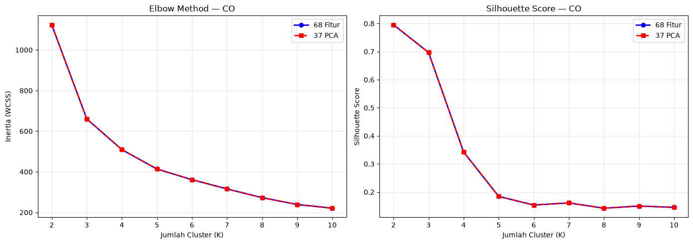
Tersimpan: fig_co_elbow_68.png
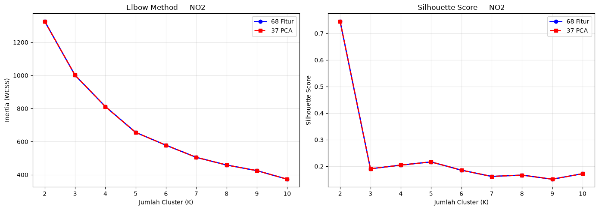
Tersimpan: fig_no2_elbow_68.png
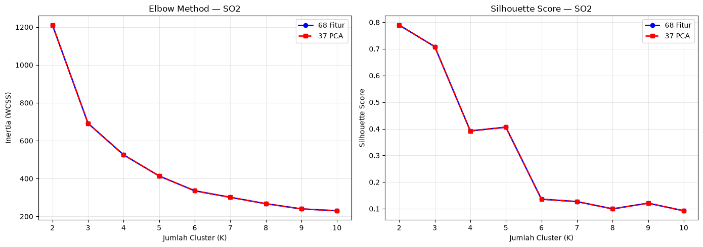
Tersimpan: fig_so2_elbow_68.png
5.2.4 Clustering dengan K Optimal#
Jalankan K-Means dengan K terbaik dari masing-masing skenario.
km_models = {}
labels_dict = {}
for p in POLLUTANTS:
best_k_68 = results_68[p]['best_k']
best_k_pca = results_pca[p]['best_k']
# Skenario 1: 68 fitur
km_68 = KMeans(n_clusters=best_k_68, random_state=42, n_init=10)
labels_68 = km_68.fit_predict(X_scaled_dict[p])
# Skenario 2: 37 PCA
km_pca = KMeans(n_clusters=best_k_pca, random_state=42, n_init=10)
labels_pca = km_pca.fit_predict(X_pca_dict[p])
km_models[p] = {'km_68': km_68, 'km_pca': km_pca}
labels_dict[p] = {'labels_68': labels_68, 'labels_pca': labels_pca}
print(f'\n=== {p} ===')
print(f'Skenario 1 (68 fitur, K={best_k_68}):')
for c in range(best_k_68):
print(f' Cluster {c}: {np.sum(labels_68 == c)} data')
print(f'Skenario 2 (37 PCA, K={best_k_pca}):')
for c in range(best_k_pca):
print(f' Cluster {c}: {np.sum(labels_pca == c)} data')
=== CO ===
Skenario 1 (68 fitur, K=2):
Cluster 0: 36 data
Cluster 1: 1 data
Skenario 2 (37 PCA, K=2):
Cluster 0: 36 data
Cluster 1: 1 data
=== NO2 ===
Skenario 1 (68 fitur, K=2):
Cluster 0: 36 data
Cluster 1: 1 data
Skenario 2 (37 PCA, K=2):
Cluster 0: 36 data
Cluster 1: 1 data
=== SO2 ===
Skenario 1 (68 fitur, K=2):
Cluster 0: 36 data
Cluster 1: 1 data
Skenario 2 (37 PCA, K=2):
Cluster 0: 36 data
Cluster 1: 1 data
5.2.5 Visualisasi Hasil Cluster (PCA 2D Projection)#
for p in POLLUTANTS:
fig, (ax1, ax2) = plt.subplots(1, 2, figsize=(15, 6))
best_k_68 = results_68[p]['best_k']
best_k_pca = results_pca[p]['best_k']
labels_68 = labels_dict[p]['labels_68']
labels_pca = labels_dict[p]['labels_pca']
km_68 = km_models[p]['km_68']
km_pca = km_models[p]['km_pca']
# Muat metadata nama/daerah untuk anotasi outlier
df_meta = pd.read_csv(f'{DATA_DIR}/ekstraksi_fitur_{p.lower()}.csv', usecols=META_COLS)
# Proyeksikan data + centroid ke 2D untuk visualisasi
pca_2d = PCA(n_components=2)
X_68_2d = pca_2d.fit_transform(X_scaled_dict[p])
C_68_2d = pca_2d.transform(km_68.cluster_centers_)
pca_2d_b = PCA(n_components=2)
X_pca_2d = pca_2d_b.fit_transform(X_pca_dict[p])
C_pca_2d = pca_2d_b.transform(km_pca.cluster_centers_)
# Skenario 1 — dengan centroid (X merah) + anotasi anggota cluster minoritas
scatter1 = ax1.scatter(X_68_2d[:, 0], X_68_2d[:, 1], c=labels_68, cmap='tab10', s=60, alpha=0.8, edgecolors='k', linewidths=0.5)
ax1.scatter(C_68_2d[:, 0], C_68_2d[:, 1], c='red', marker='X', s=220, edgecolors='black', linewidths=1.2, label='Centroid', zorder=5)
ax1.set_title(f'Skenario 1: 68 Fitur (K={best_k_68}) — {p}')
ax1.set_xlabel(f"PC1 ({pca_2d.explained_variance_ratio_[0]*100:.1f}%)")
ax1.set_ylabel(f"PC2 ({pca_2d.explained_variance_ratio_[1]*100:.1f}%)")
ax1.legend()
ax1.grid(True, alpha=0.3)
# Anotasi cluster kecil (outlier): tandai nama/daerahnya
vals, cnts = np.unique(labels_68, return_counts=True)
minor = vals[np.argmin(cnts)]
for i in np.where(labels_68 == minor)[0]:
ax1.annotate(f"{df_meta.iloc[i]['nama'][:14]}.. ({df_meta.iloc[i]['daerah']})", (X_68_2d[i,0], X_68_2d[i,1]), fontsize=7, xytext=(6,6), textcoords='offset points', bbox=dict(boxstyle='round,pad=0.2', fc='yellow', alpha=0.7))
# Skenario 2 — dengan centroid + anotasi
scatter2 = ax2.scatter(X_pca_2d[:, 0], X_pca_2d[:, 1], c=labels_pca, cmap='tab10', s=60, alpha=0.8, edgecolors='k', linewidths=0.5)
ax2.scatter(C_pca_2d[:, 0], C_pca_2d[:, 1], c='red', marker='X', s=220, edgecolors='black', linewidths=1.2, label='Centroid', zorder=5)
ax2.set_title(f'Skenario 2: 37 PCA (K={best_k_pca}) — {p}')
ax2.set_xlabel(f"PC1 ({pca_2d_b.explained_variance_ratio_[0]*100:.1f}%)")
ax2.set_ylabel(f"PC2 ({pca_2d_b.explained_variance_ratio_[1]*100:.1f}%)")
ax2.legend()
ax2.grid(True, alpha=0.3)
vals2, cnts2 = np.unique(labels_pca, return_counts=True)
minor2 = vals2[np.argmin(cnts2)]
for i in np.where(labels_pca == minor2)[0][:5]:
ax2.annotate(f"{df_meta.iloc[i]['nama'][:14]}..", (X_pca_2d[i,0], X_pca_2d[i,1]), fontsize=7, xytext=(6,6), textcoords='offset points', bbox=dict(boxstyle='round,pad=0.2', fc='yellow', alpha=0.7))
plt.tight_layout()
plt.savefig(f'../data/images/clustering/{p.lower()}/fig_{p.lower()}_cluster_68.png', dpi=150, bbox_inches='tight')
plt.show()
print(f'Tersimpan: fig_{p.lower()}_cluster_68.png')
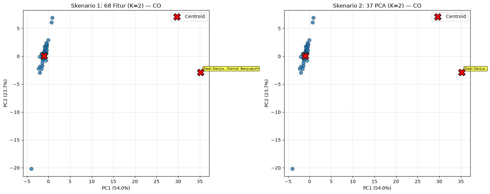
Tersimpan: fig_co_cluster_68.png
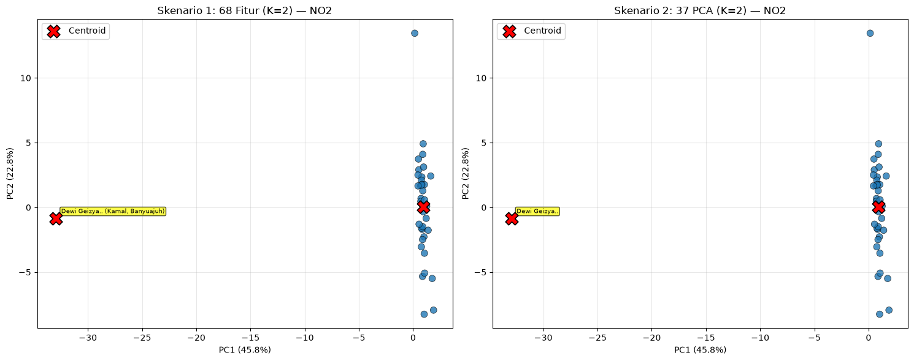
Tersimpan: fig_no2_cluster_68.png
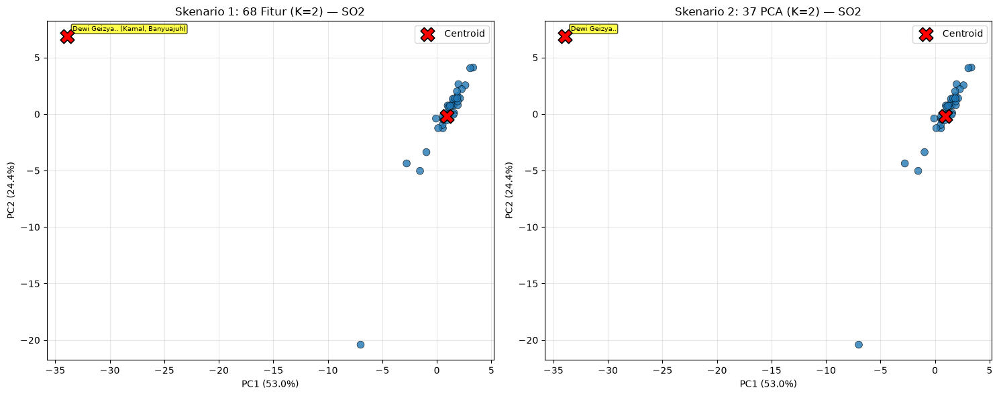
Tersimpan: fig_so2_cluster_68.png
5.2.6 Silhouette per Sampel (Diagram Silhouette)#
Rata-rata silhouette saja bisa menipu (misal K=2 dengan komposisi 36-vs-1). Diagram ini menampilkan silhouette tiap titik, diurutkan per cluster — terlihat apakah ada cluster yang tipis/outlier atau semua anggota kompak.
for p in POLLUTANTS:
X = X_scaled_dict[p]
labels = labels_dict[p]['labels_68']
k = results_68[p]['best_k']
sil_vals = silhouette_samples(X, labels)
sil_avg = results_68[p]['best_sil']
fig, ax = plt.subplots(figsize=(8, 4.5))
y_lower = 0
yticks = []
for c in range(k):
c_vals = np.sort(sil_vals[labels == c])
y_upper = y_lower + len(c_vals)
ax.fill_betweenx(np.arange(y_lower, y_upper), 0, c_vals, alpha=0.7, label=f'Cluster {c} (n={len(c_vals)})')
yticks.append((y_lower + y_upper) / 2)
y_lower = y_upper + 2
ax.axvline(sil_avg, color='red', linestyle='--', label=f'Rata-rata={sil_avg:.3f}')
ax.set_title(f'Silhouette per Sampel — {p} (68 fitur, K={k})')
ax.set_xlabel('Silhouette')
ax.set_ylabel('Sampel (diurutkan per cluster)')
ax.set_yticks(yticks)
ax.set_yticklabels([f'C{c}' for c in range(k)])
ax.legend(fontsize=8)
ax.grid(True, alpha=0.3, axis='x')
plt.tight_layout()
plt.savefig(f'../data/images/clustering/{p.lower()}/fig_{p.lower()}_silhouette_samples.png', dpi=150, bbox_inches='tight')
plt.show()
print(f'Tersimpan: fig_{p.lower()}_silhouette_samples.png')
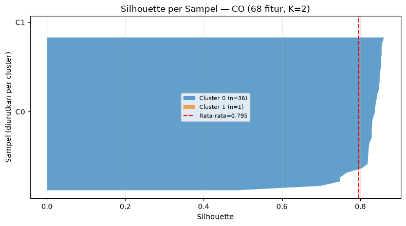
Tersimpan: fig_co_silhouette_samples.png
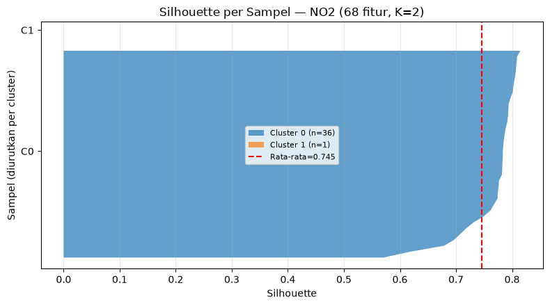
Tersimpan: fig_no2_silhouette_samples.png
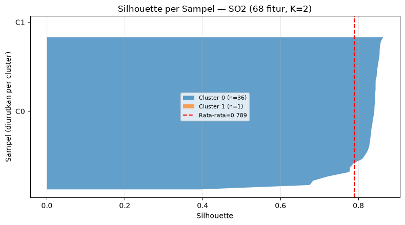
Tersimpan: fig_so2_silhouette_samples.png
5.2.7 Distribusi Ukuran Cluster & Komposisi Daerah#
Menjawab dua pertanyaan penting: (1) apakah ukuran cluster seimbang atau didominasi outlier 36-vs-1, dan (2) apakah cluster berkaitan dengan daerah (interpretasi spasial).
for p in POLLUTANTS:
df_meta = pd.read_csv(f'{DATA_DIR}/ekstraksi_fitur_{p.lower()}.csv', usecols=META_COLS)
fig, (ax1, ax2) = plt.subplots(1, 2, figsize=(14, 4.5))
# (a) Bar ukuran cluster: Skenario 1 vs 2
labels_68 = labels_dict[p]['labels_68']
labels_pca = labels_dict[p]['labels_pca']
u68, c68 = np.unique(labels_68, return_counts=True)
upca, cpca = np.unique(labels_pca, return_counts=True)
x = np.arange(max(len(u68), len(upca)))
w = 0.35
b1 = ax1.bar(x[:len(u68)] - w/2, c68, width=w, label='68 fitur')
b2 = ax1.bar(x[:len(upca)] + w/2, cpca, width=w, label='37 PCA')
ax1.bar_label(b1, fontsize=8)
ax1.bar_label(b2, fontsize=8)
ax1.set_xticks(x)
ax1.set_xticklabels([f'C{i}' for i in x])
ax1.set_title(f'Ukuran Cluster — {p}')
ax1.set_ylabel('Jumlah data')
ax1.legend()
ax1.grid(True, alpha=0.3, axis='y')
# (b) Heatmap cluster vs daerah (Skenario 1)
ct = pd.crosstab(df_meta['daerah'], labels_68)
im = ax2.imshow(ct.values, aspect='auto', cmap='YlOrRd')
ax2.set_xticks(range(len(ct.columns)))
ax2.set_xticklabels([f'C{c}' for c in ct.columns])
ax2.set_yticks(range(len(ct.index)))
ax2.set_yticklabels(list(ct.index), fontsize=7)
ax2.set_title(f'Cluster vs Daerah — {p} (68 fitur)')
ax2.set_xlabel('Cluster')
for i in range(len(ct.index)):
for j in range(len(ct.columns)):
ax2.text(j, i, ct.values[i, j], ha='center', va='center', fontsize=8)
plt.colorbar(im, ax=ax2, label='Jumlah')
plt.tight_layout()
plt.savefig(f'../data/images/clustering/{p.lower()}/fig_{p.lower()}_cluster_sizes.png', dpi=150, bbox_inches='tight')
plt.show()
print(f'--- {p} crosstab cluster vs daerah ---')
print(ct.to_string())
print(f"Tersimpan: fig_{p.lower()}_cluster_sizes.png")
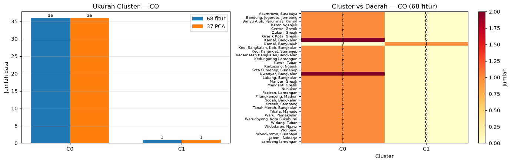
--- CO crosstab cluster vs daerah ---
col_0 0 1
daerah
Asemrowo, Surabaya 1 0
Bandung, Jogoroto, Jombang 1 0
Banyu Ajuh, Perumnas, Kamal 1 0
Baron Nganjuk 1 0
Cerme, Gresik 1 0
Dukun, Gresik 1 0
Gresik Kota, Gresik 1 0
Kamal, Bangkalan 2 0
Kamal, Banyuajuh 0 1
Kec. Bangkalan, Kab. Bangkalan 1 0
Kec. Kalianget, Sumenep 1 0
Kecamatan Bangkalan,Bangkalan 1 0
Kedungpring Lamongan 1 0
Kerek, Tuban 1 0
Kertosono, Ngajuk 1 0
Kota Sumenep, Sumenep 1 0
Kwanyar, Bangkalan 2 0
Labang, Bangkalan 1 0
Manyar, Gresik 1 0
Menganti Gresik 1 0
Nunukan 1 0
Paciran, Lamongan 1 0
Pilangkenceng, Madiun 1 0
Socah, Bangkalan 1 0
Sreseh, Sampang 1 0
Tanah Merah, Bangkalan 1 0
Tikala, Manado 1 0
Waru, Pamekasan 1 0
Warudoyong, Kota Sukabumi 1 0
Widang, Tuban 1 0
Widodaren, Ngawi 1 0
Wonoayu 1 0
Wonokromo, Surabaya 1 0
jabon , Sidoarjo 1 0
sambeng lamongan 1 0
Tersimpan: fig_co_cluster_sizes.png
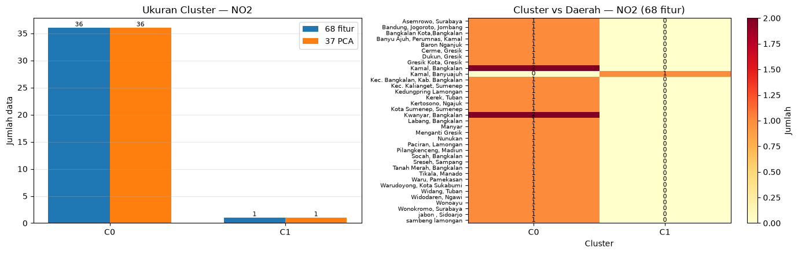
--- NO2 crosstab cluster vs daerah ---
col_0 0 1
daerah
Asemrowo, Surabaya 1 0
Bandung, Jogoroto, Jombang 1 0
Bangkalan Kota,Bangkalan 1 0
Banyu Ajuh, Perumnas, Kamal 1 0
Baron Nganjuk 1 0
Cerme, Gresik 1 0
Dukun, Gresik 1 0
Gresik Kota, Gresik 1 0
Kamal, Bangkalan 2 0
Kamal, Banyuajuh 0 1
Kec. Bangkalan, Kab. Bangkalan 1 0
Kec. Kalianget, Sumenep 1 0
Kedungpring Lamongan 1 0
Kerek, Tuban 1 0
Kertosono, Ngajuk 1 0
Kota Sumenep, Sumenep 1 0
Kwanyar, Bangkalan 2 0
Labang, Bangkalan 1 0
Manyar 1 0
Menganti Gresik 1 0
Nunukan 1 0
Paciran, Lamongan 1 0
Pilangkenceng, Madiun 1 0
Socah, Bangkalan 1 0
Sreseh, Sampang 1 0
Tanah Merah, Bangkalan 1 0
Tikala, Manado 1 0
Waru, Pamekasan 1 0
Warudoyong, Kota Sukabumi 1 0
Widang, Tuban 1 0
Widodaren, Ngawi 1 0
Wonoayu 1 0
Wonokromo, Surabaya 1 0
jabon , Sidoarjo 1 0
sambeng lamongan 1 0
Tersimpan: fig_no2_cluster_sizes.png
--- SO2 crosstab cluster vs daerah ---
col_0 0 1
daerah
Asemrowo, Surabaya 1 0
Bandung, Jogoroto, Jombang 1 0
Banyu Ajuh, Perumnas, Kamal 1 0
Baron Nganjuk 1 0
Cerme, Gresik 1 0
Dukun, Gresik 1 0
Gresik Kota, Gresik 1 0
Kamal, Bangkalan 2 0
Kamal, Banyuajuh 0 1
Kec. Bangkalan, Kab. Bangkalan 1 0
Kec. Kalianget, Sumenep 1 0
Kecamatan Bangkalan,Bangkalan 1 0
Kedungpring Lamongan 1 0
Kerek, Tuban 1 0
Kertosono, Ngajuk 1 0
Kota Sumenep, Sumenep 1 0
Kwanyar, Bangkalan 2 0
Labang, Bangkalan 1 0
Manyar, Gresik 1 0
Menganti Gresik 1 0
Nunukan 1 0
Paciran, Lamongan 1 0
Pilangkenceng, Madiun 1 0
Socah, Bangkalan 1 0
Sreseh, Sampang 1 0
Tanah Merah, Bangkalan 1 0
Tikala, Manado 1 0
Waru, Pamekasan 1 0
Warudoyong, Kota Sukabumi 1 0
Widang, Tuban 1 0
Widodaren, Ngawi 1 0
Wonoayu 1 0
Wonokromo, Surabaya 1 0
jabon , Sidoarjo 1 0
sambeng lamongan 1 0
Tersimpan: fig_so2_cluster_sizes.png
5.2.8 Profil Centroid & Fitur Pembeda#
(a) Heatmap centroid menunjukkan rata-rata tiap fitur (terstandarisasi) per cluster. (b) Bar selisih centroid menampilkan 10 fitur dengan perbedaan terbesar — inilah ciri yang membedakan kedua cluster.
for p in POLLUTANTS:
cols = [c for c in pd.read_csv(f'{DATA_DIR}/ekstraksi_fitur_{p.lower()}.csv', nrows=0).columns if c not in META_COLS]
km = km_models[p]['km_68']
C = km.cluster_centers_ # (K, 68), sudah dalam skala standardized
diff = np.abs(C[0] - C[1])
top10_idx = np.argsort(diff)[::-1][:10]
top10_names = [cols[i] for i in top10_idx]
fig, (ax1, ax2) = plt.subplots(1, 2, figsize=(15, 5), gridspec_kw={'width_ratios': [1.6, 1]})
# (a) Heatmap centroid
im = ax1.imshow(C, aspect='auto', cmap='coolwarm', vmin=-3, vmax=3)
ax1.set_yticks([0, 1])
ax1.set_yticklabels(['Cluster 0 (n=mayoritas)', 'Cluster 1 (n=minoritas)'])
ax1.set_xlabel('Fitur (68)')
ax1.set_title(f'Heatmap Centroid — {p} (68 fitur, standardized)')
plt.colorbar(im, ax=ax1, label='Rata-rata (z-score)')
# (b) Top-10 fitur pembeda
y = np.arange(10)
ax2.barh(y, diff[top10_idx])
ax2.set_yticks(y)
ax2.set_yticklabels(top10_names, fontsize=8)
ax2.invert_yaxis()
ax2.set_xlabel('|Centroid0 - Centroid1|')
ax2.set_title(f'Top-10 Fitur Pembeda — {p}')
ax2.grid(True, alpha=0.3, axis='x')
plt.tight_layout()
plt.savefig(f'../data/images/clustering/{p.lower()}/fig_{p.lower()}_centroid_profile.png', dpi=150, bbox_inches='tight')
plt.show()
print(f'{p} Top-5 pembeda: {top10_names[:5]}')
print(f"Tersimpan: fig_{p.lower()}_centroid_profile.png")
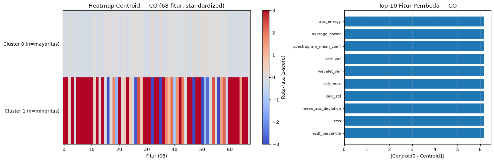
CO Top-5 pembeda: ['abs_energy', 'average_power', 'spectrogram_mean_coeff', 'calc_var', 'wavelet_var']
Tersimpan: fig_co_centroid_profile.png
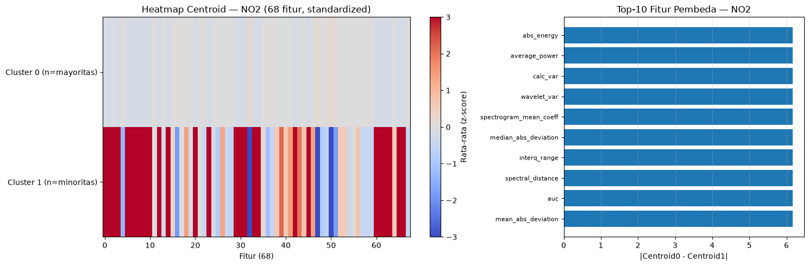
NO2 Top-5 pembeda: ['abs_energy', 'average_power', 'calc_var', 'wavelet_var', 'spectrogram_mean_coeff']
Tersimpan: fig_no2_centroid_profile.png
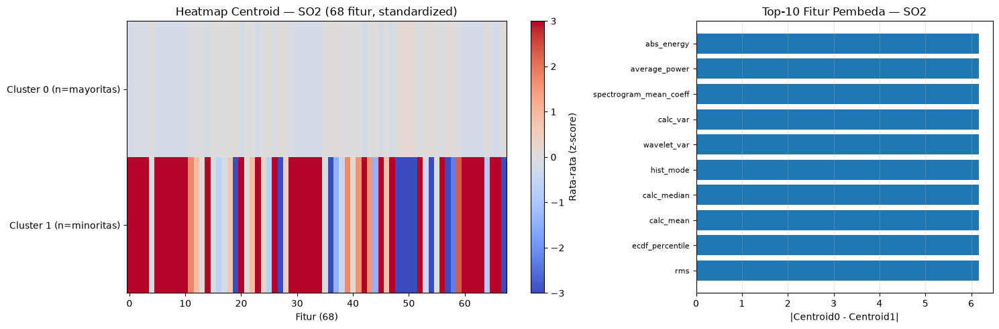
SO2 Top-5 pembeda: ['abs_energy', 'average_power', 'spectrogram_mean_coeff', 'calc_var', 'wavelet_var']
Tersimpan: fig_so2_centroid_profile.png
5.2.9 Jarak ke Centroid & Sebaran Fitur Pembeda#
(a) Histogram jarak ke centroid membuktikan apakah cluster minoritas (1 data) adalah outlier jauh. (b) Boxplot 4 fitur pembeda utama memperlihatkan sebaran tiap cluster secara individual.
for p in POLLUTANTS:
df_full = pd.read_csv(f'{DATA_DIR}/ekstraksi_fitur_{p.lower()}.csv')
feat_cols = [c for c in df_full.columns if c not in META_COLS]
X = X_scaled_dict[p]
labels = labels_dict[p]['labels_68']
km = km_models[p]['km_68']
# Jarak Euclidean tiap titik ke centroid cluster-nya
dists = np.linalg.norm(X - km.cluster_centers_[labels], axis=1)
# Cari 4 fitur pembeda dari selisih centroid
diff = np.abs(km.cluster_centers_[0] - km.cluster_centers_[1])
top4_idx = np.argsort(diff)[::-1][:4]
top4 = [feat_cols[i] for i in top4_idx]
fig, (ax1, ax2) = plt.subplots(1, 2, figsize=(15, 4.8))
# (a) Histogram jarak per cluster
for c in [0, 1]:
ax1.hist(dists[labels == c], bins=12, alpha=0.6, label=f'Cluster {c} (n={(labels==c).sum()})')
ax1.set_title(f'Jarak ke Centroid — {p} (68 fitur)')
ax1.set_xlabel('Jarak Euclidean ke centroid')
ax1.set_ylabel('Frekuensi')
ax1.legend()
ax1.grid(True, alpha=0.3)
# (b) Boxplot 4 fitur pembeda, dikelompokkan per cluster
data_box = []
tick_labels = []
for f in top4:
for c in [0, 1]:
data_box.append(df_full.loc[labels == c, f].values)
tick_labels.append(f'{f[:12]}..\nC{c}')
bp = ax2.boxplot(data_box, patch_artist=True)
for i, patch in enumerate(bp['boxes']):
patch.set_facecolor('lightblue' if i % 2 == 0 else 'salmon')
ax2.set_xticklabels(tick_labels, rotation=30, ha='right', fontsize=7)
ax2.set_title(f'Sebaran 4 Fitur Pembeda — {p}')
ax2.grid(True, alpha=0.3, axis='y')
plt.tight_layout()
plt.savefig(f'../data/images/clustering/{p.lower()}/fig_{p.lower()}_distance_boxplot.png', dpi=150, bbox_inches='tight')
plt.show()
print(f"Tersimpan: fig_{p.lower()}_distance_boxplot.png")
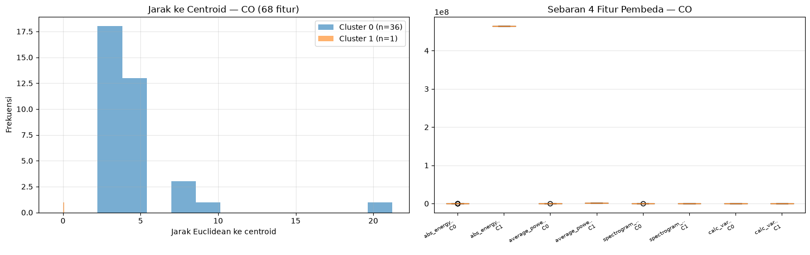
Tersimpan: fig_co_distance_boxplot.png
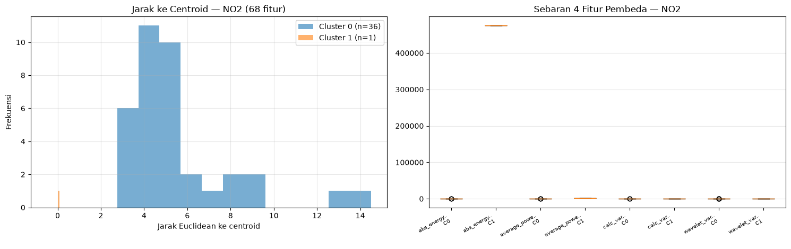
Tersimpan: fig_no2_distance_boxplot.png
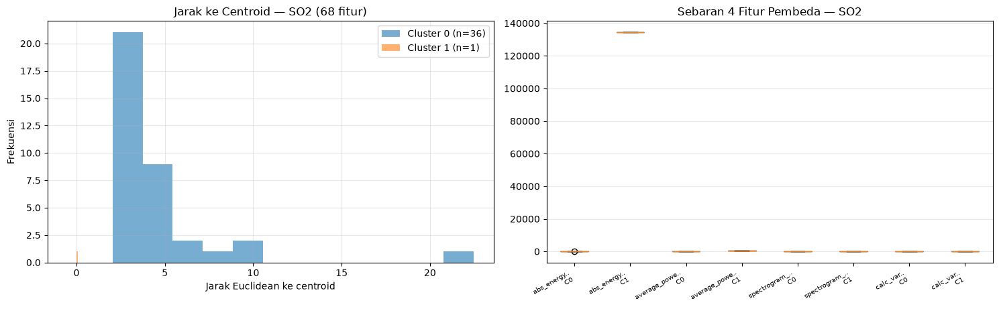
Tersimpan: fig_so2_distance_boxplot.png
5.2.10 Ringkasan Metrik per Polutan#
Polutan |
Skenario |
Fitur |
K Terbaik |
Silhouette Score |
Inertia |
|---|---|---|---|---|---|
CO |
1 |
68 |
2 |
0.7955 |
1123.80 |
CO |
2 |
37 PCA |
2 |
0.7955 |
1123.80 |
NO₂ |
1 |
68 |
2 |
0.7455 |
1326.58 |
NO₂ |
2 |
37 PCA |
2 |
0.7455 |
1326.58 |
SO₂ |
1 |
68 |
2 |
0.7894 |
1210.46 |
SO₂ |
2 |
37 PCA |
2 |
0.7894 |
1210.46 |
rows = []
for p in POLLUTANTS:
best_k_68 = results_68[p]['best_k']
best_sil_68 = results_68[p]['best_sil']
inertia_68 = results_68[p]['inertias'][best_k_68 - 2]
best_k_pca = results_pca[p]['best_k']
best_sil_pca = results_pca[p]['best_sil']
inertia_pca = results_pca[p]['inertias'][best_k_pca - 2]
rows.append({'Polutan': p, 'Skenario': '1 (68 Fitur)', 'Fitur': 68,
'K Terbaik': best_k_68, 'Silhouette': round(best_sil_68, 4),
'Inertia': round(inertia_68, 2)})
rows.append({'Polutan': p, 'Skenario': '2 (37 PCA)', 'Fitur': 37,
'K Terbaik': best_k_pca, 'Silhouette': round(best_sil_pca, 4),
'Inertia': round(inertia_pca, 2)})
df_ringkasan = pd.DataFrame(rows)
df_ringkasan
| Polutan | Skenario | Fitur | K Terbaik | Silhouette | Inertia | |
|---|---|---|---|---|---|---|
| 0 | CO | 1 (68 Fitur) | 68 | 2 | 0.7955 | 1123.80 |
| 1 | CO | 2 (37 PCA) | 37 | 2 | 0.7955 | 1123.80 |
| 2 | NO2 | 1 (68 Fitur) | 68 | 2 | 0.7455 | 1326.58 |
| 3 | NO2 | 2 (37 PCA) | 37 | 2 | 0.7455 | 1326.58 |
| 4 | SO2 | 1 (68 Fitur) | 68 | 2 | 0.7894 | 1210.46 |
| 5 | SO2 | 2 (37 PCA) | 37 | 2 | 0.7894 | 1210.46 |
5.2.11 Analisis Sensitivitas: K-Means Tanpa Outlier#
Hasil 5.2.4–5.2.9 menunjukkan K=2 selalu beranggotakan 36-vs-1 (satu sampel dari Kamal, Banyuajuh). Pada bagian ini sampel outlier tersebut dikeluarkan (tersisa 36 data), lalu pencarian K optimal (Elbow + Silhouette, K=2..10) dan clustering diulang pada 68 fitur yang di-scaling ulang — untuk melihat struktur cluster yang sebenarnya tanpa dominasi outlier.
sens_results = {}
for p in POLLUTANTS:
df_full = pd.read_csv(f'{DATA_DIR}/ekstraksi_fitur_{p.lower()}.csv')
feat_cols = [c for c in df_full.columns if c not in META_COLS]
X_full = df_full[feat_cols].values
if np.isnan(X_full).sum() > 0:
X_full = SimpleImputer(strategy='median').fit_transform(X_full)
# Identifikasi outlier = anggota cluster minoritas Skenario 1
labels = labels_dict[p]['labels_68']
vals, cnts = np.unique(labels, return_counts=True)
minor = vals[np.argmin(cnts)]
out_idx = np.where(labels == minor)[0]
for i in out_idx:
print(f"{p} outlier: index={i}, nama={df_full.iloc[i]['nama']}, daerah={df_full.iloc[i]['daerah']}")
# Keluarkan outlier, scaling ulang pada 36 data
mask = np.ones(len(X_full), dtype=bool)
mask[out_idx] = False
Xs36 = StandardScaler().fit_transform(X_full[mask])
print(f'--- {p} tanpa outlier: {Xs36.shape[0]} data x {Xs36.shape[1]} fitur ---')
inertias, silhouettes, best_k, best_sil = find_optimal_k(Xs36, f'{p}-noOut')
sens_results[p] = {'X': Xs36, 'mask': mask, 'out_idx': out_idx,
'inertias': inertias, 'silhouettes': silhouettes,
'best_k': best_k, 'best_sil': best_sil}
print(f'>>> {p} tanpa outlier: K={best_k}, silhouette={best_sil:.4f}')
CO outlier: index=36, nama=Dewi Geizya, daerah=Kamal, Banyuajuh
--- CO tanpa outlier: 36 data x 68 fitur ---
CO-noOut K=2: inertia=1542.72, silhouette=0.6737
CO-noOut K=3: inertia=1232.57, silhouette=0.1868
CO-noOut K=4: inertia=1045.07, silhouette=0.2236
CO-noOut K=5: inertia=933.51, silhouette=0.1404
CO-noOut K=6: inertia=798.35, silhouette=0.1390
CO-noOut K=7: inertia=660.89, silhouette=0.1494
CO-noOut K=8: inertia=589.16, silhouette=0.1413
CO-noOut K=9: inertia=531.27, silhouette=0.1432
CO-noOut K=10: inertia=491.91, silhouette=0.1337
>>> CO tanpa outlier: K=2, silhouette=0.6737
NO2 outlier: index=36, nama=Dewi Geizya, daerah=Kamal, Banyuajuh
--- NO2 tanpa outlier: 36 data x 68 fitur ---
NO2-noOut K=2: inertia=1767.79, silhouette=0.3992
NO2-noOut K=3: inertia=1414.89, silhouette=0.1794
NO2-noOut K=4: inertia=1227.44, silhouette=0.1583
NO2-noOut K=5: inertia=1077.06, silhouette=0.1631
NO2-noOut K=6: inertia=990.35, silhouette=0.1288
NO2-noOut K=7: inertia=858.71, silhouette=0.1306
NO2-noOut K=8: inertia=717.30, silhouette=0.1642
NO2-noOut K=9: inertia=630.97, silhouette=0.1505
NO2-noOut K=10: inertia=557.72, silhouette=0.1542
>>> NO2 tanpa outlier: K=2, silhouette=0.3992
SO2 outlier: index=36, nama=Dewi Geizya, daerah=Kamal, Banyuajuh
--- SO2 tanpa outlier: 36 data x 68 fitur ---
SO2-noOut K=2: inertia=1655.31, silhouette=0.6501
SO2-noOut K=3: inertia=1203.34, silhouette=0.2248
SO2-noOut K=4: inertia=965.43, silhouette=0.2641
SO2-noOut K=5: inertia=860.13, silhouette=0.2199
SO2-noOut K=6: inertia=726.03, silhouette=0.1404
SO2-noOut K=7: inertia=654.08, silhouette=0.1274
SO2-noOut K=8: inertia=556.84, silhouette=0.1239
SO2-noOut K=9: inertia=512.87, silhouette=0.1188
SO2-noOut K=10: inertia=460.61, silhouette=0.1341
>>> SO2 tanpa outlier: K=2, silhouette=0.6501
for p in POLLUTANTS:
r = sens_results[p]
Xs36, best_k = r['X'], r['best_k']
km_s = KMeans(n_clusters=best_k, random_state=42, n_init=10)
lb_s = km_s.fit_predict(Xs36)
r['labels'] = lb_s
r['km'] = km_s
fig, (ax0, ax1, ax2) = plt.subplots(1, 3, figsize=(18, 5))
ax0.plot(list(K_range), r['inertias'], 'bo-', linewidth=2)
ax0.set_xlabel('Jumlah Cluster (K)')
ax0.set_ylabel('Inertia (WCSS)')
ax0.set_title(f'Elbow Tanpa Outlier — {p} (n=36)')
ax0.grid(True, alpha=0.3)
ax1.plot(list(K_range), r['silhouettes'], 'go-', linewidth=2)
ax1.axvline(best_k, color='red', linestyle='--', label=f'K={best_k}')
ax1.set_xlabel('Jumlah Cluster (K)')
ax1.set_ylabel('Silhouette Score')
ax1.set_title(f'Silhouette Tanpa Outlier — {p} (n=36)')
ax1.legend()
ax1.grid(True, alpha=0.3)
pca_v = PCA(n_components=2)
Xv = pca_v.fit_transform(Xs36)
Cv = pca_v.transform(km_s.cluster_centers_)
ax2.scatter(Xv[:, 0], Xv[:, 1], c=lb_s, cmap='tab10', s=60, alpha=0.8, edgecolors='k', linewidths=0.5)
ax2.scatter(Cv[:, 0], Cv[:, 1], c='red', marker='X', s=220, edgecolors='black', linewidths=1.2, label='Centroid', zorder=5)
ax2.set_xlabel(f"PC1 ({pca_v.explained_variance_ratio_[0]*100:.1f}%)")
ax2.set_ylabel(f"PC2 ({pca_v.explained_variance_ratio_[1]*100:.1f}%)")
ax2.set_title(f'Cluster Tanpa Outlier — {p} (K={best_k}, n=36)')
ax2.legend()
ax2.grid(True, alpha=0.3)
for c in range(best_k):
ax2.text(0.02, 0.95 - c*0.07, f'C{c}: {(lb_s==c).sum()} data', transform=ax2.transAxes, fontsize=9, bbox=dict(boxstyle='round', fc='wheat', alpha=0.7))
plt.tight_layout()
plt.savefig(f'../data/images/clustering/{p.lower()}/fig_{p.lower()}_sensitivity_no_outlier.png', dpi=150, bbox_inches='tight')
plt.show()
print(f"Tersimpan: fig_{p.lower()}_sensitivity_no_outlier.png")
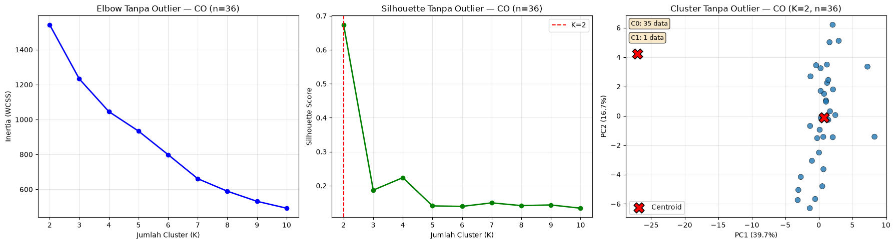
Tersimpan: fig_co_sensitivity_no_outlier.png
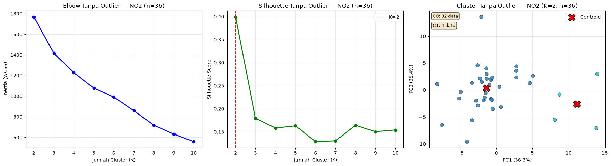
Tersimpan: fig_no2_sensitivity_no_outlier.png
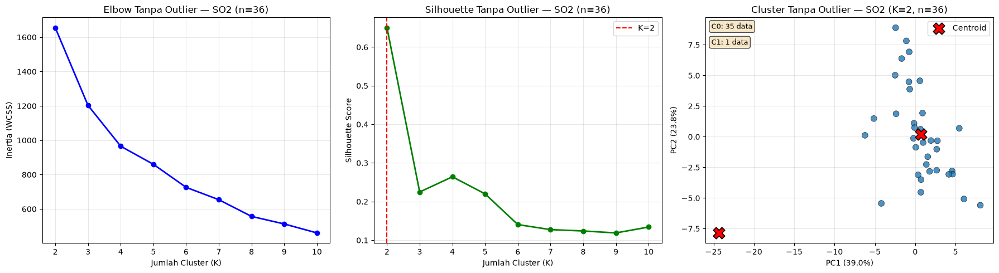
Tersimpan: fig_so2_sensitivity_no_outlier.png
rows_sens = []
for p in POLLUTANTS:
k0 = results_68[p]['best_k']
rows_sens.append({'Polutan': p, 'Kondisi': 'Dengan outlier (n=37)',
'K Terbaik': k0, 'Silhouette': round(results_68[p]['best_sil'], 4),
'Inertia': round(results_68[p]['inertias'][k0 - 2], 2)})
k1 = sens_results[p]['best_k']
rows_sens.append({'Polutan': p, 'Kondisi': 'Tanpa outlier (n=36)',
'K Terbaik': k1, 'Silhouette': round(sens_results[p]['best_sil'], 4),
'Inertia': round(sens_results[p]['inertias'][k1 - 2], 2)})
df_sens = pd.DataFrame(rows_sens)
df_sens
| Polutan | Kondisi | K Terbaik | Silhouette | Inertia | |
|---|---|---|---|---|---|
| 0 | CO | Dengan outlier (n=37) | 2 | 0.7955 | 1123.80 |
| 1 | CO | Tanpa outlier (n=36) | 2 | 0.6737 | 1542.72 |
| 2 | NO2 | Dengan outlier (n=37) | 2 | 0.7455 | 1326.58 |
| 3 | NO2 | Tanpa outlier (n=36) | 2 | 0.3992 | 1767.79 |
| 4 | SO2 | Dengan outlier (n=37) | 2 | 0.7894 | 1210.46 |
| 5 | SO2 | Tanpa outlier (n=36) | 2 | 0.6501 | 1655.31 |
5.2.12 Kesimpulan#
Silhouette Score yang lebih tinggi menunjukkan cluster yang lebih terpisah dan compact.
Diagram silhouette per sampel (5.2.6) + histogram jarak (5.2.9) menunjukkan K=2 beranggotakan 36-vs-1: skor tinggi didorong satu outlier jauh, bukan dua kelompok seimbang — perlu kehati-hatian interpretasi.
Heatmap centroid & Top-10 fitur pembeda (5.2.8) + boxplot (5.2.9) menjelaskan mengapa outlier terpisah.
Crosstab cluster vs daerah (5.2.7) menguji apakah pemisahan berkaitan dengan lokasi spasial.
Jika Skenario 2 (PCA) menghasilkan silhouette yang lebih baik atau setara → PCA efektif mereduksi noise.
Jika Skenario 1 lebih baik → fitur asli masih lebih informatif.
Analisis sensitivitas (5.2.11): setelah outlier (Dewi Geizya, Kamal Banyuajuh) dikeluarkan, K optimal tetap 2 namun silhouette turun — CO 0.7955→0.6737, NO₂ 0.7455→0.3992, SO₂ 0.7894→0.6501 — menegaskan skor tinggi sebelumnya didorong outlier, terutama pada NO₂.
Komparasi lengkap ada di notebook 5.3.